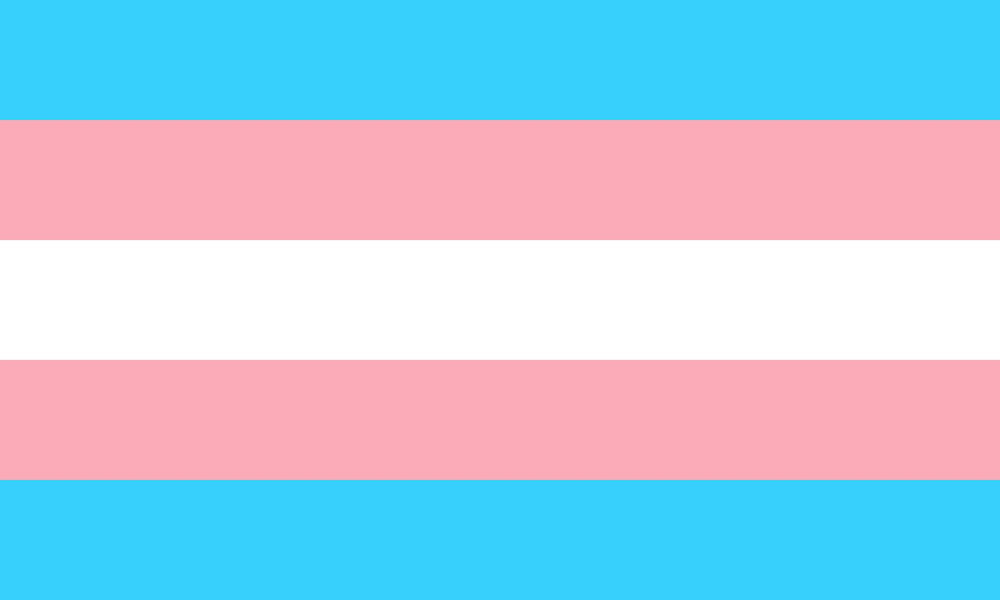

¿Transgénero?
Si alguna vez has visto la marcha de la comunidad LGBTQ+, te podrás haber dado cuenta de que se repite mucho la palabra "Transgénero", pero ¿Qué significa esta palabra?
Bandera trans
El significado de la palabra "Transgénero"
La palabra transgénero (o trans) se refiere a las personas que se identifican con el género opuesto y optan por sólo hacer un tratamiento hormonal.
La palabra cisgénero (o cis) se refiere a las personas que se identifican con el género que se les asignó al nacer.
¿Qué son la identidad y expresión de género?
La identidad de género se refiere a la identificación de una persona como hombre, mujer u otro género.
La expresión de género es la manifestación externa de la identidad de género, puede o no encajar en los comportamientos, características o vestimentas etiquetadas por la sociedad para identificar a un hombre o a una mujer.
¿Cuál es la diferencia entre sexo y género?
El sexo es la clasificación de una persona como "masculina" o "femenina" basada en sus genitales (pene o vagina) y/o sus hormonas sexuales (testosterona o progesterona).
El género se refiere a las características, comportamientos y vestimentas que son estereotipadas por la sociedad según donde vivan.
¿Qué es la transición?
La transición es un proceso por el cual pasan personas transgénero para poder vivir sus vidas en el género con el que se identifican en vez del sexo que se les asignó a saber. El procedimiento puede o no incluir procedimientos médicos (terapia hormonal, cirugía de reasignación de sexo, etc).
¿Qué es FTM y MTF?
FTM significa female-to-male o de femenino-a-masculino. Se le puede llamar FTM a una persona que transicionó de esta manera, sin embargo, muchas personas prefieren usar el término hombre trans para referirse a ellos.
MTF significa male-to-female o de masculino-a-femenino. Se le puede llamar MTF a una persona que transicionó de esta manera, sin embargo, muchas personas prefieren usar el término mujer trans para referirse a ellas.
¿Cuál es la diferencia entre ser gay y transgénero?
El ser una persona trangénero tiene que ver con tu identidad de género, mientras que ser gay tiene que ver con tu orientación sexual. Se puede ser gay y transgénero al mismo tiempo, pero no están siempre unidas. Las identidad de género y la orientación sexual son dos cosas distintas.
Si una persona es travesti ¿Es transgénero?
No siempre, el ser una persona travesti significa vestirse, maquillarse y usar accesorios que socialmente no están asociados con su sexo biológico.
Mucha gente que es travesti está cómoda con el sexo que se le otorgó al nacer y, por lo general no desean cambiarlo. Sin embargo, hay personas que gracias a travestir, se dieron cuenta de que eran transgénero.
Travestir es una forma de expresión de género que no necesariamente es un indicativo de la identidad de género de una persona o de su orientación sexual.
¿Todas las personas que transicionan se hacen cirugía?
No. Muchas personas transgénero pueden transicionar sin cirugía. Algunas sólo optan por hacer un tratamiento hormonal.
También hay muchas personas transgénero que no pueden costear los tratamientos médicos o tener acceso a ellos.
¿Qué pronombres debo usar?
En realidad siempre la mejor opción es preguntarle a esa persona con qué pronombres se identifica. Si la persona no está segura, es adecuado usar el nombre y pronombres que prefiera.
Algunas personas transgénero no creen en el género binario y prefieren que se les llame por sus nombres o que la gente use pronombres sin género como "su" o "ellos".